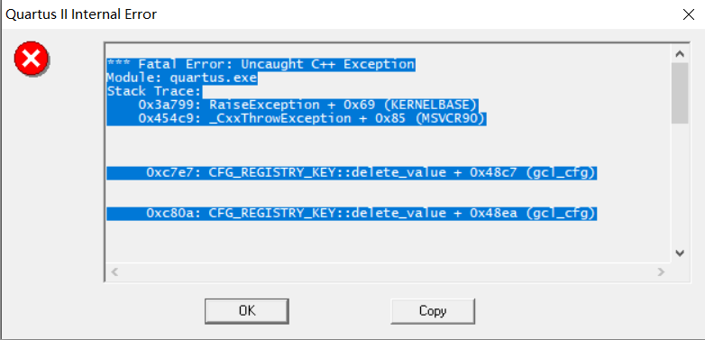
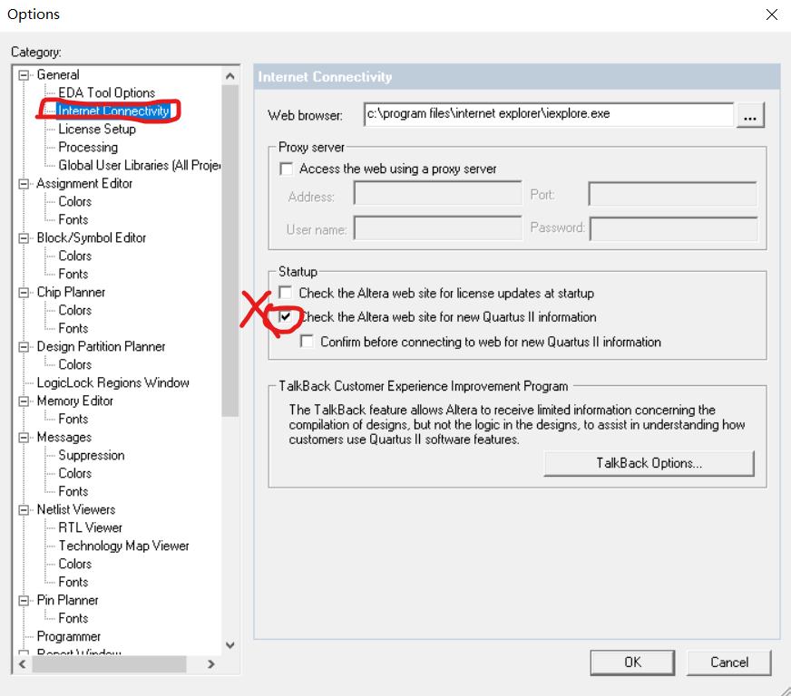
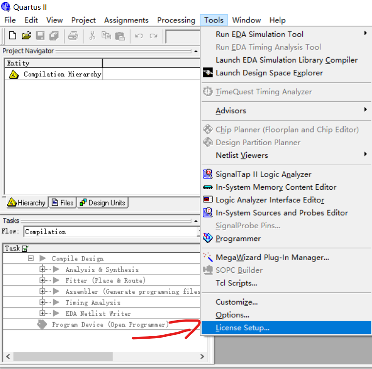

Quartus II 9.1仿真软件安装时的问题¶
Abstract¶
此文介绍了：
- 由自动更新引起的闪退问题及其解决
- 破gai时多个NICID时的解决方案
问题一¶
- 安装完成后会出现这个界面，点击确定后会闪退。

问题一解决方案¶
- 第一步：先把电脑的网络关闭，这个问题是由于自动检查更新导致的
- 第二步：打开软件，在菜单栏找到TOOL，再找到Option选项，打开

- 第三步：在左侧栏中找到 Internet Connectivity，再到右侧将Update勾选去掉

问题二¶

- 在TOOL->License Setup里面，会有多个NIC ID，在破改的时候可能会用到这个参数：

问题二解决方案¶
- 这个其实是你电脑网卡的物理地址，如果你有多个网卡或者虚拟网卡，就会有多个ID
- 一般随机找一个来使用就可以了（复制到用于破gai的License.dat文件里面）
- 【重要】记住，如果你是64位电脑，将破解文件复制到
quartus的bin64的目录下进行破解，并将输出的License.dat放在bin64目录下
小技巧¶
- Quartus II9.1恢复默认窗口布局:Tool->Customize->general->Reset All
REFERENCE 参考¶
CSDN——Quartus II出现*** Fatal Error: Uncaught C++ Exception Module: quartus.exe Stack Trace CSDN——Quartux II破解